HOMESTUCK RECAP #2
Act 3: Insane Corkscrew Haymakers
Intermission: Don’t Bleed on the Suits.
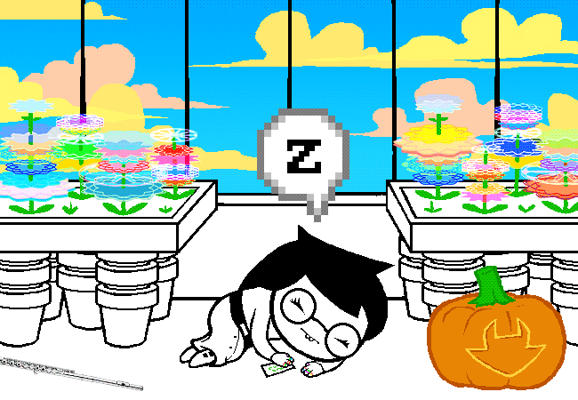
Act 3: Insane Corkscrew Haymakers
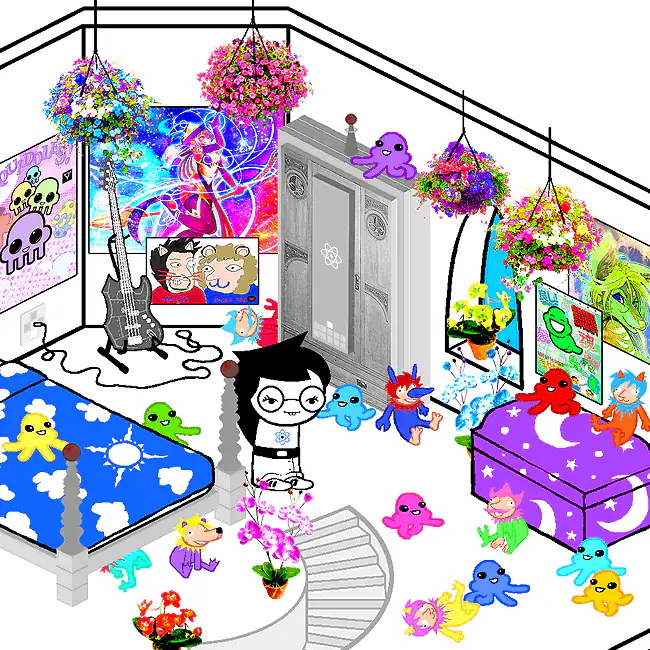
Act 3 finally introduces gardenGnostic (GG) in person as JADE HARLEY, the fourth member of the group. She lives on a remote tropical island with a sprawling house, a lagoon full of mysterious frog ruins, and an absurdly powerful dog named BECQUEREL.
Bec can teleport almost anywhere instantly and is extremely serious about keeping Jade away from those ruins.
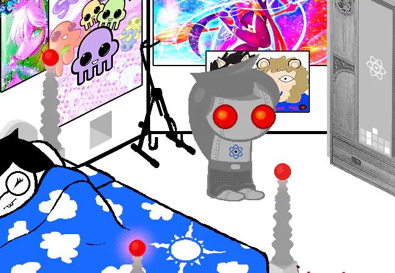
Jade’s house is packed with exotic technology and trophies associated with GRANDPA. A DREAMBOT mirrors Jade’s sleeping body and lets her remain connected to her friends while she dreams.
She also seems to know things before they happen, keeping colorful reminders and following hunches whose source is not yet clear.
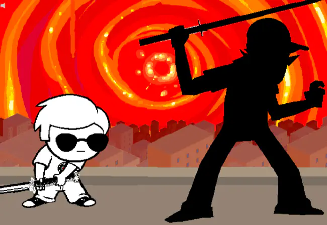
While Jade’s introduction unfolds, the other kids pick up where Act 2 left them. Dave begins a rooftop STRIFE with BRO for the Sburb discs, John fights the CRUDE OGRES, and Rose follows the secret passage beneath Jaspers’s mausoleum toward the mysterious laboratory nearby.
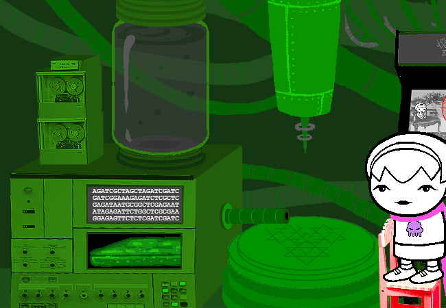
Rose finds a sprawling SKAIANET facility filled with meteor tracking equipment, transportalizers, and an ECTOBIOLOGY lab. She also discovers a session terminal monitoring the kids’ game.
Experimenting with an APPEARIFIER, Rose tries to retrieve Jaspers from the past and creates a paradox clone instead. She eventually recovers Jaspers’s corpse and a mutant kitten before escaping back home.
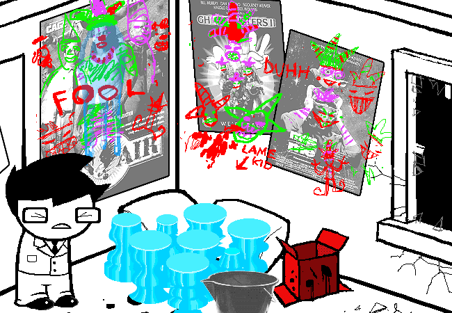
With Rose reconnected, John defeats the ogres and levels up. He rummages through DAD’s distressingly normal room, unwraps more presents, finally notices the graffiti he has been sleepwalking past, and alchemizes new gear while Rose builds toward the FIRST GATE.
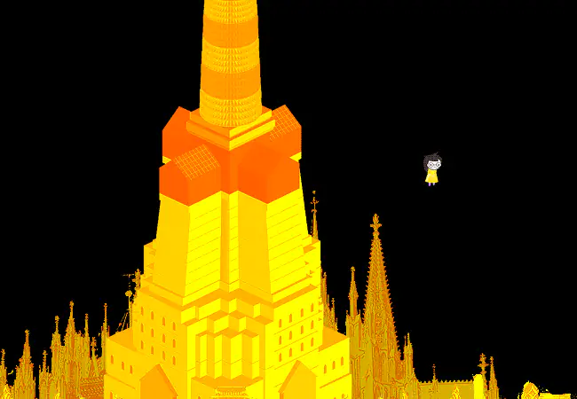
When Jade falls asleep, another version of her wakes on PROSPIT, the golden kingdom of light. Prospit orbits Skaia with a moon attached by a giant chain. Dream Jade lives on that moon and can fly freely through the golden city.
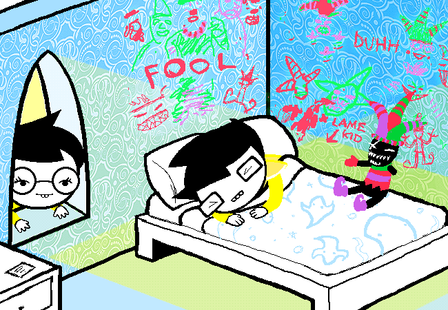
When Prospit’s moon swings close to Skaia, Dream Jade watches visions form in the clouds. This is where much of her strange foreknowledge comes from.
Dream John lives in the neighboring tower, but he has never awakened. His troubled dreams spill into waking life as the graffiti he unconsciously leaves on his walls.
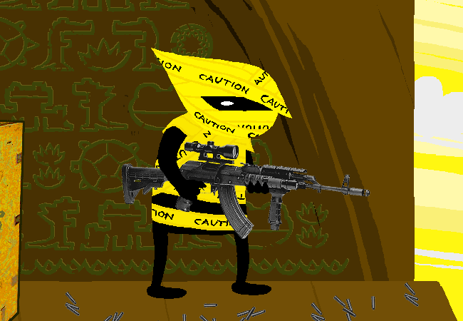
In the future wasteland, PEREGRINE MENDICANT’s command station carries her to the same frog ruins where WV landed. Their reunion is complicated by a trigger-happy black-shelled stranger, the AIMLESS RENEGADE, who has declared the ruins a crime scene and would very much like everyone to stop contaminating it.
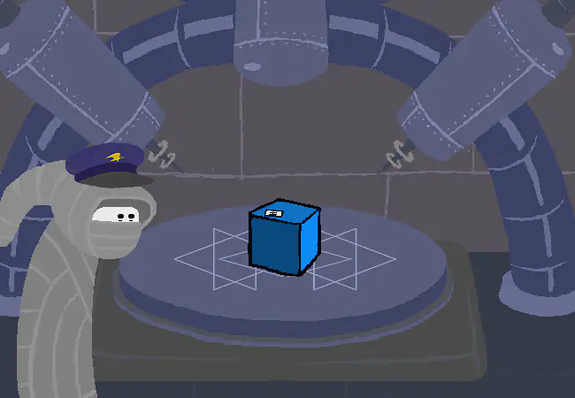
Jade’s dream visions have already set a complicated delivery route in motion. PM and WV help send a blue package through PM’s station machinery so it can arrive on Jade’s island years earlier. The package is one of John’s birthday gifts to his friends, completing a delivery route through the past and future.
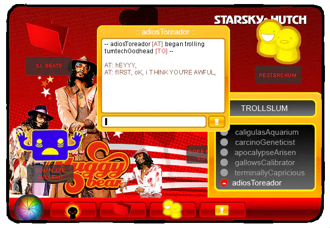
At roughly the same time, the kids’ chats reveal that they have been receiving messages from a group of hostile internet trolls. The trolls claim to be outside the kids’ universe, speak as though they know what will happen, and seem deeply committed to being annoying about it.
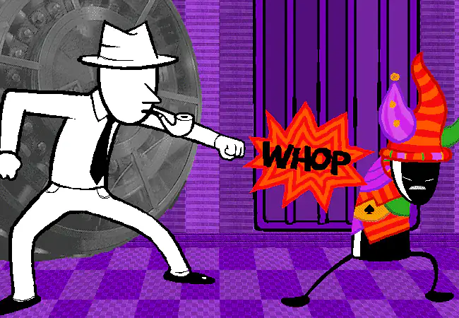
DAD, meanwhile, has been carried to the purple kingdom opposing Prospit. There he meets its ARCHAGENT, JACK NOIR, a black-shelled bureaucrat forced to wear increasingly humiliating harlequin attire. DAD earns Jack’s immediate respect by destroying the hat. Jack decides not to kill him.
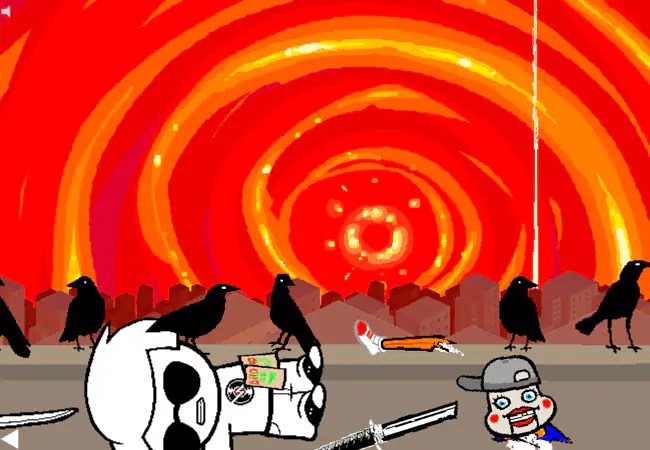
Dave’s rooftop battle ends with BRO defeating him. Bro leaves the Sburb discs behind and rockets away on his board. Dave finally has what he needs to become Rose’s server player.
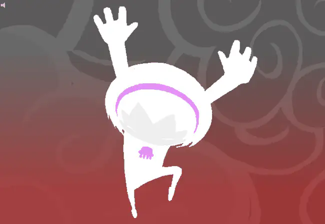
Dave installs Sburb and connects to Rose. Together they deploy her entry machinery and prototype her KERNELSPRITE twice, first with Jaspers and then with a tentacled princess doll. With another meteor closing in, Rose takes a leap of faith and enters the Medium.
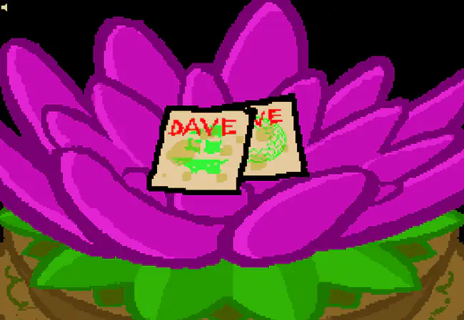
Act 3 closes with several entries of a different sort. John reaches the FIRST GATE and jumps through. Jade enters the frog ruins for the first time and finds a flowering lotus time capsule, which opens to reveal a pair of mysteriously juice-stained Sburb discs.
END OF ACT 3.
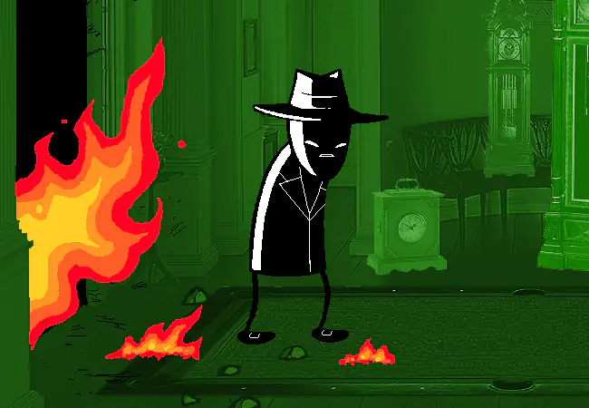
Intermission: Don’t Bleed on the Suits.
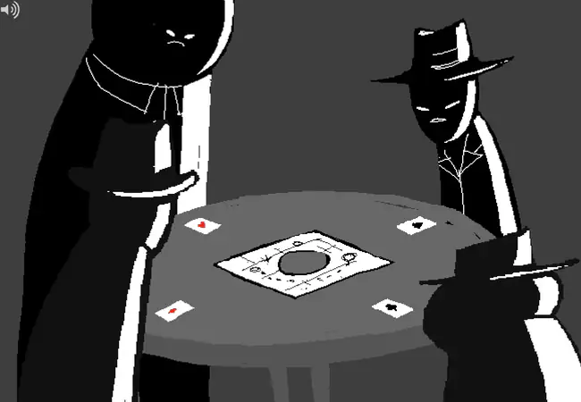
SPADES SLICK, DIAMONDS DROOG, CLUBS DEUCE, and HEARTS BOXCARS are the MIDNIGHT CREW, a gang of black-shelled mobsters invading a mansion owned by their enemies, THE FELT. Their agenda is straightforward: wreck the place, kill green guys, and crack a very large vault.
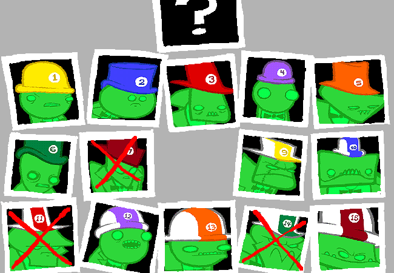
The Felt are fifteen mobsters employed by the mysterious LORD ENGLISH. Nearly all of them have some kind of time-related ability, including slowing time, looping through past and future positions, and jumping between timelines. The Crew responds mostly by shooting them.
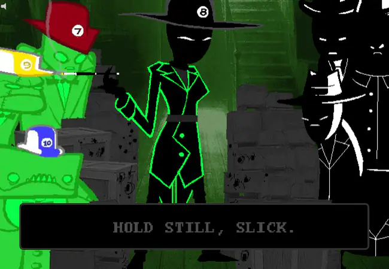
One member of the Felt is different. SNOWMAN is tied to the universe itself, so killing her would destroy the universe too. This makes her difficult to murder even by Midnight Crew standards. The remaining Felt rely on their time powers, luck, and strength to survive the Crew’s attack.
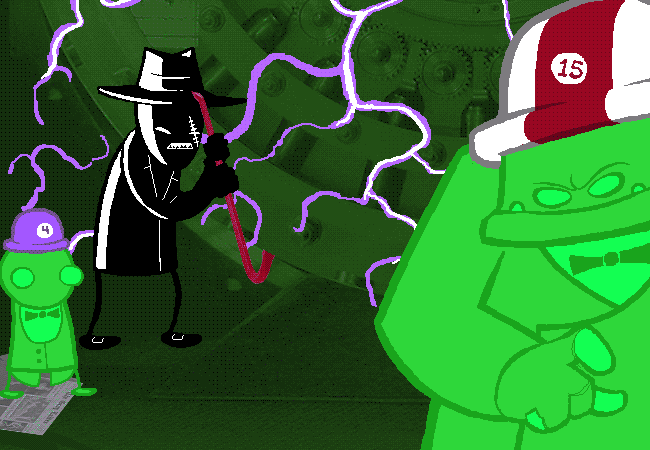
Eventually Slick loses patience and goes straight for the vault. Using CROWBAR’s crowbar on it triggers exactly the sort of weird time stuff Clover warned him about. Slick is thrown into another timeline where the mansion is already a smoking ruin and almost everyone is dead.
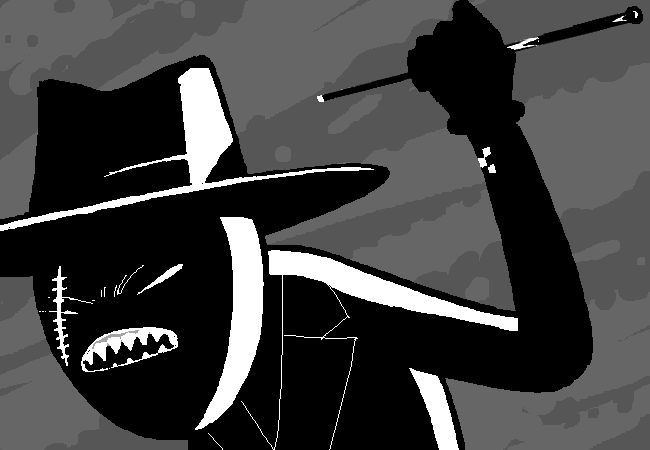
SNOWMAN is still there. She shoots Slick’s key card, tears off his arm, and locks him inside the vault. Slick manages to reopen a hidden hatch by flipping his sprite and scanning the reversed barcode.
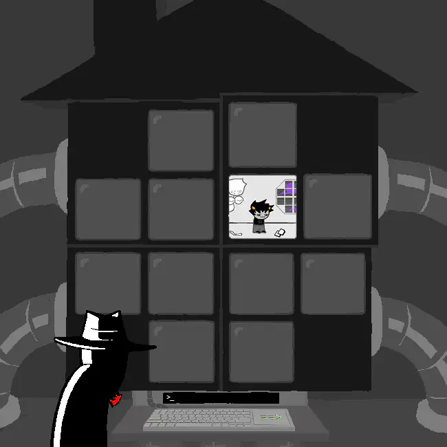
Below the vault, Slick finds a command station like the ones used by the Exiles. Its monitors are tracking twelve unfamiliar players in the Medium. One screen shows a young troll, and Slick immediately starts typing commands at him.
Somehow, this was all relevant.
END INTERMISSION.